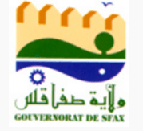
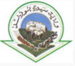

المساحة : 288 كم²
التعداد : 1.056.247 نسمة
الكثافة السكانية : 3667,52 ن/كم²
نبذة عن المدينة :
تقع ولاية تونس في الشمال الشرقي للجمهورية التونسية. عاصمتها مدينة تونس ومن مدنها باردو، قرطاج، المرسى تكون مع ولايات أريانة وبن عروس ومنوبة إقليم تونس الكبرى. تبلغ مساحتها 288 كم² ويقطنها حوالي 1.056.247 نسمة حسب احصائيات 2014. يقع مركز الولاية بمدينة تونس العاصمة.
التاريخ :
تأسست ولاية تونس في 21 جوان 1956 حول مدينة تونس, وتتكون من 21 معتمدية 8 بلديات و159 عمادة.
الجغرافيا :
تقع ولاية تونس في الشمال الشرقي للبلاد التونسية، تحدها ثلاثة ولايات وهي بن عروس، منوبة وأريانة. ويحدها شرقا البحر الأبيض المتوسط.
التعليم :
جامعة تونس هي الجامعة الأم في منظومة التعليم العالي بتونس وتوجد بتونس العاصمة. وتؤمن هذه الجامعة تدريس حوالي ستين اختصاصا. ويوجد بها 8 مخابر و37 وحدة بحث. جامعة قرطاج تشرف الجامعة حاليا على اثنين وثلاثين مؤسسة تعليم عال وبحث. وفي سنة 2013، بلغ عدد طلبة الجامعة 48634 طالب وطالبة. جامعة تونس المنار هي قطب جامعي أسس سنة 2000 في إطار إعادة هيكلة مؤسسات التعليم العالي في تونس. تعتبر الجامعة أحد أكبر الأقطاب الجامعية في تونس بطاقة استعاب تفوق ال45،000 طالب. تضم الجامعة 52 شعبة يشرف عليها 2500 أستاذا. تقع كل كليات الجامعة في تونس العاصمة وقد سميت نسبة إلى حي المنار حيث يقع مقرها الرئيسي.
الرياضة :
تنشط في ولاية تونس عدة أندية رياضية أبرزها النادي الإفريقي, الترجي الرياضي التونسي والملعب التونسي. وهي تنشط في دوري الرابطة المحترفة الأولى التونسي. وتضم الولاية أهم المركّبات الرياضية في البلاد التونسية، أبرزها ملعب 14 جانفي والملعب الأولمبي بالمنزه.
المساحة : 2.768 كم²
التعداد : 176.945 نسمة
الكثافة السكانية : 263,9 ن/كم²
نبذة عن المدينة :
ولاية زغوان التي تأسست 1976، هي إحدى ولايات تونس الأربعة والعشرين. تبلغ مساحتها 2.768 كم² (أي 1,7% من مساحة البلاد) وتعداد سكانها سنة 2014 176.945 نسمة (وهي تحتل بذلك المرتبة 21 بين ولايات تونس حيث عدد السكان). مركزها مدينة زغوان.
التاريخ :
تأسست ولاية زغوان حول مدينة زغوان, في نوفمبر 1976, وتتكون من 6 معتمديات, 6 بلديات و 48 عمادة.
الجغرافيا :
تقع ولاية زغوان في الشمال الشرقي التونسي وتبعد على العاصمة مسافة 51 كم. تشتهر بمياهها العذبة وطبيعتها الخلابة وقد تعاقبت عليها العديد من الحضارات كالحضارة الرومانية والحضارة الإسلامية وصولا إلى احتضان المهاجرين الأندلسيين.[3] وتقع مدينة زغوان شمال شرقي البلاد التونسية على بعد قرابة خمسة وخمسين كيلو مترا من العاصمة وقد أطلق عليها الرومان إسم : "زيكا" لإرتباطها بجبل زغوان الذي تنضب منه العديد من عيون المياه الطبيعية.
كما يقع في الولاية جبل زغوان هو جبل قرب مدينة زغوان، يمتد على طول 9 كم وعلى عرض 3 كم. قمته المسماة رأس القَصْعَة على ارتفاع 1295 م.
يحدها شمالا ولايتا بن عروس ومنوبة وجنوبا ولايتا سوسة والقيروان وغربا ولايتا سليانة وباجة.
الاقتصاد :
اشتهرت زغوان بكونها منطقة زراعية إلا أنها عرفت مؤخرا نشاطا صناعيا. تتركز القوة العاملة أساسا في الميدان الفلاحي (33,3%) والخدمات (17,9%) والصناعات اليدوية (16%).
توجد بولاية زغوان 150 مؤسسة صناعية و63 مؤسسة أجنبية، من بينها 43 وحدة مخصصة للتصدير فحسب. تعمل هذه المؤسسات في ميادين الصناعة والسياحة والخدمات والفلاحة.
أهم المنتوجات الزراعية بالمنطقة هي:
-الحبوب: 5,42% من الإنتاج الوطني
-اللحوم الحمراء: 3,2% من الإنتاج الوطني
-اللحوم البيضاء: 3% من الإنتاج الوطني
-الحليب: 2,4% من الإنتاج الوطني
-زيت الزيتون: 2,5% من الإنتاج الوطني
-الفواكه: 0,63% من الإنتاج الوطني
أهم المنتوجات المصدرة هي:
-النسيج
-المنتجات الميكانيكية الكهربائية والإلكترونية
-زيت الزيتون
-الاسمنت
-صناعات الخشب
المواقع الأثرية :
تضم ولاية زغوان المدينة الأثرية توبربو ماجوس التابعة لمدينة الفحص، ويضم الموقع كابيتولا ومعابد وحمامات وحيّا سكنيا يضم منازل ومنشآت تحتوي على عدد كبير من لوحات الفسيفساء
المساحة : 790 كم²
التعداد : 842 631 نسمة
الكثافة السكانية : 830 ن/كم²
نبذة عن المدينة :
ولاية بن عروس هي إحدى ولايات الجمهورية التونسية الـ24. تقع الولاية في شمال البلاد وتكون مع ولايات تونس، أريانة ومنوبة إقليم تونس الكبرى. تم إحداثها سنة 1983 في الثالث من ديسمبر. تبلغ مساحتها 790 كم² ويقطنها حوالي 631.842 نسمة (تعداد 2014)
التاريخ :
تأسست ولاية بن عروس حول مدينة بن عروس في 3 ديسمبر 1983، وتتكون من 12 معتمدية، 11 بلدية و 75 عمادة.
الصناعة :
تتمركز بهذه الولاية أكبر نسبة من الصناعات المعملية المتواجدة في إقليم تونس الكبرى.
المواقع الأثرية :
تضم ولاية بن عروس المدينة الأثرية أوذنة التي تقع على بعد 30 كيلومتر عن العاصمة تونس.
الرياضة :
ينشط في ولاية بن عروس العديد من الأندية أبرزها النادي الرياضي لحمام الأنف الذي ينتمي في الموسم 2013-2014 إلى الرابطة التونسية المحترفة الأولى لكرة القدم ويتمرن في الملعب البلدي بحمام الأنف.
مدن شقيقة :
مدينة بن عروس ومدينة سانت إتيان (فرنسا)، منذ 26 جانفي 1994. مدينة بن عروس ومدينة أبريليا (إيطاليا)، منذ 29 أكتوبر 2003.
المساحة : 482 كم²
التعداد : 576.088 نسمة
الكثافة السكانية : 1195 ن/كم²
نبذة عن المدينة :
ولاية أريانة هي إحدى ولايات الجمهورية التونسية الاربع والعشرين، وتكون مع ولايات تونس، بن عروس ومنوبة إقليم تونس الكبرى. صدر مرسوم أحداث الولاية في مارس 1983. تقع هذه الولاية في شمال البلاد ويحدّها شرقا البحر الأبيض المتوسط، جنوبا ولاية تونس، غربا ولاية منوبة وشمالا ولاية بنزرت. يبلغ عدد سكانها 576.088 نسمة (تعداد 2014) وتبلغ مساحتها 482 كيلومتر مربع. يقع مقر الولاية بمدينة أريانة.
التاريخ :
تأسست ولاية أريانة في مارس 1983 حول مدينة أريانة، وتضم سبعة معتمديات، و 42 عمادة
الجغرافيا :
تقع ولاية أريانة في الشمال الشرقي للجمهورية التونسية، تحدها كل من ولايات تونس، بنزرت ومنوبة والبحر الأبيض المتوسط شرقا.
النشاط الاقتصادي :
يمثل النشاط الصناعي أهم مجال اقتصادي للولاية وخصوصا صناعة الاقمشة والملبس والتغذية. يمثل النشاط الصناعي 50% من النشاط الاقتصادي. تعتبر الزراعة نشاطا اقتصاديا مهما أيضا. من أهم المنتوجات الزراعية نجد :
-اللحوم : 4608 طن
-الحليب : 46300 طن
-القمح : 27771 طن
-الأشجار : 19430 طن
المساحة : 3.685 كم²
التعداد : 568.219 نسمة
الكثافة السكانية : 154,19 ن/كم²
نبذة عن المدينة :
نبذة عن المدينة : ولاية بنزرت هي إحدى ولايات الجمهورية التونسية الأربع والعشرين. وتقع شمالي البلاد وتبلغ مساحتها 3.685 كم² ويقطنها حوالي 568.219 ألف نسمة حسب احصائيات 2014. يقع مقر الولاية في مدينة بنزرت. ومن المدن والقرى التابعة لها : رأس الجبل،أوتيك، عوسجة، غار الملح، ماطر، منزل بورقيبة، منزل جميل، منزل عبد الرحمان، رفراف، جومين، غزالة، العالية، جرزونة، تينجة، سجنان ...
الجغرافيا :
يبعد مركز الولاية عن العاصمة 64 كلم, و تعد منطقة الرأس الأبيض التابعة لولاية بنزرت أعلى نقطة في القارة الإفريقية. يحدها االبحر الأبيض المتوسط بالشمال (250 كلم), و لاية باجة بالجنوب الغربي, و ولاية أريانة و ولاية منوبة بالجنوب الشرقي. مناخها معتدل و رطب و متوسط الحرارة فيها 22,8 درجة مائوية.
الاقتصاد :
الأنشطة الاقتصادية بالمنطقة ترتكز أساسا على الأنشطة الزراعية, الصناعية و الصيد البحري. في المنطقة توجد 368 مؤسسة صناعية تشغل حوالي 50,000 شخص, من بينها 248 مؤسسة توجه انتاجها بالكامل نحو التصدير. هذه المؤسسات تركز نشاطها أساسا نحو قطاعات النسيج, الجلود و الأحذية, الأغذية, الميكانيك و الالكتورنيك. في النشاط الزراعي تساهم الولاية بقرابة 40 % من ناتج البلاد من الخضروات. إنتاج اللحوم الحمراء يمثل 15 % من الناتج الوطني و إنتاج الحليب 18,4 % من الناتج الوطني. مع 250 كلم من السواحل, ثلاث بحيرات طبيعية, خمسة موانئ للصيد البحري (سيدي مشرق, بنزرت, منزل عبد الرحمان, راس زبيب و غار الملح), تعتبر المنطقة من أغنى مناطق الصيد البحري بتونس: الأسطول البحري يتركب من 1403 وحدة منها 582 قارب مزود بمحرك, 745 قارب بالمجداف, 49 وحدة للصيد بالنار و 26 وحدة للصيد في المياه العميقة. من بين 529,400 ساكن, نجد 181,033 شخص ينشط في المجال الزراعي و الصيد البحري (24,6 % ), الصناعة (25,3 %) و الخدمات (19,8 %)
المساحة : 2788 كم²
التعداد : 787.920 نسمة
الكثافة السكانية : 266 ن/كم²
نبذة عن المدينة :
ولاية نابل إحدى ولايات الجمهورية التونسية الأربع والعشرون. تمتد الولاية على مساحة 2788 كم2 ويبلغ عدد سكانها 787.920 حسب إحصائيات سنة 2014.
التاريخ :
تم إحداث الولاية في 21 جوان 1956. تسمى أيضا الوطن القبلي، وهو اسم غير رسمي. كما كانت تسمى ولاية الوطن القبلي من 25 سبتمبر 1957 إلى 17 سبتمبر 1964.
السياحة :
ولاية نابل هي أول قطب سياحي في تونس. فيوجد فيها حوالي 150 فندق بطاقة استيعابية تصل إلى 45000 سرير وهو ما يساوي ربع الطاقة الاستيعابية في تونس وتتوزع الفنادق بالشكل الآتي.
-5 نجوم : 8 فندق
-4 نجوم : 29 فندق
-3 نجوم : 45 فندق
-2 نجوم : 31 فندق
-1 نجمة : 9 فندق
تعتبر مدينة الحمامات أكبر المدن السياحية في تونس وهي متواجدة في مدخل مدينة نابل. وكذلك قربص التي تشتهر بجبالها الباسقة وبحارها التي تصب فيها عيون عديدة وأشهرها عين عتروس.
الزراعة :
تساهم ولاية نابل بـ15 % من الإنتاج الزراعي الوطني التونسي. تبلغ المساحة الصالحة للزراعة 246000 هكتار وهو ما يشكل 4% من المساحة الصالحة الوطنية. بين سنة 1997 وسنة 2000 عرفت الاستثمارات في المجال الزراعي بولاية نابل ارتفاعا بنسبة 36%. تبلغ نسبة إنتاج العنب بالولاية 80% من الإنتاج التونسي للعنب. وكذلك تعرف باسم "الوطن القبلي" ولها إنتاج هام من القوارص وهي معروفة جهويا بها.
المساحة : 1137 كم²
التعداد : 379.518 نسمة
نبذة عن المدينة :
ولاية مَنُّوبَة، إحدى ولايات الجمهورية التونسية الـ24. تقع في شمال البلاد تحدّها شرقا ولايتا أريانة وتونس، شمالا ولاية بنزرت، غربا ولاية باجة وجنوبا ولاية زغوان. يبلغ عدد سكانها الـ379.518 نسمة (تعداد 2014). يقع مقر الولاية بمدينة منوبة
اصل التسمية :
لقد ذهب بعض المؤرخين إلى أن الأصل البونيقي لكلمة منوبة هي تركيب مزجي لـ"منّة" و معناها الخير و "وبة" و معناها السوق.
الجغرافيا :
تقع ولاية منوبة في الشمال الشرقي للجمهورية التونسية وتحدها ستة ولايات وهي بنزرت، تونس، أريانة، بن عروس، زغوان وباجة.
المساحة : 2788 كم²
التعداد : 787.920 نسمة
الكثافة السكانية : 266 ن/كم²
نبذة عن المدينة :
ولاية جَنْدُوبَة (كان اسمها قبل عام 1966 ولاية سوق الأربعاء)[3] ولاية تقع في أقصى الشمال الغربي للجمهوريّة التونسيّة. تحدها شرقا ولاية باجة و غربا القطر الجزائري و جنوبا ولايتي سليانة و الكاف و شمالا البحر الأبيض المتوسط يشقّ نهر مجردة مدينة جندوبة عاصمة الولاية وهو أطول نهر بالبلاد التونسية و وادي مجردة ينحدر من جبال سوق أهراس بالجزائر. وتتميّز باتساع سهولها وجودة تربتها و كثرة سدودها بها أكثر من ثلث المخزون المائي بالبلاد التونسية و فيها أعكبر الغابات المعروفة بسلسلة جبال خمير تمتد من الجزائر الى ولاية بنزرت التونسية وخصوبتها وتنوّع فلاحتها وإنتاجها الزراعي الوفير وبمناطقها السقويّة الشاسعة والمتعدّدة.
التاريخ :
جندوبة هي وريثة بلاريجيا المدينة الرومانية والبونيقية التي صعدت منذ القرن الأول للميلاد إلى مرتبة البلدية وتمصرت مع أختها شمتو فأصبحت قاعدة الشمال الغربي على الطريق الرئيسية بين قرطاج وبونة, فبعد هجر بلاريجيا لم يحصل أن تكونت مدينة بسهول مجردة الوسطى لتواصل حمل مشعل التمدن والحضارة رغم تعاقب القبائل على المنطقة من المشرق العربي أو من داخل البلاد إلى أن تكونت نواة مدينة جندوبة حول محطة السكة الحديدية التي شرع في استعمالها في 01-09-1879.
ولقد انبعثت مدينة جندوبة في أول الأمر شمال السكة الحديدية حول الثكنة العسكرية متواضعة بسيطة في مظهرها وهندستها وبعد عقد من الزمن أخذت تتوسع جنوبا مكونة بذلك عدة أنهج جديدة كنهج المغرب ونهج الساقية ونهج محمد علي. عرفت مدينة جندوبة منذ نبعاثها باسم سوق الاربعاء نسبة إلى اسم السوق الأسبوعية التي تنتصب كل يوم أربعاء أما سكان المنطقة فكانوا يطلقون عليها كلمة البراكة نسبة إلى المحلات المشيدة من ألواح الخشب وفي سنة 1966 أطلق عليها اسم جندوبة بمقتضى أمر رئاسي بتاريخ 30-04-1966
المساحة : 5081 كم²
التعداد : 243156 نسمة
نبذة عن المدينة :
ولاية الكاف هي إحدى ولايات تونس الأربع والعشرين وعاصمتها مدينة الكاف. تمتد على مساحة 5081 كم² وتمثل نقطة تواصل في إقليم الشمال الغربي كما تضطلع بدور حيوي في تنشيط الإقليم باعتبار أنها تمثل نقطة عبور لأهم محاور الطرقات الطريق الوطنية رقم 5 تربط بين تونس و الجزائر مرورا بساقية سيدي يوسف.
التاريخ :
تأسست ولاية الكاف في جوان 1956 حول مدينة الكاف. وتتكون من 11 معتمدية، 12 بلدية و87 عمادة.
الجغرافيا :
تقع ولاية الكاف في الشمال الغربي للجمهورية التونسية وعلى الحدود الجزائرية. يبعد مركز الولاية حوالي 175 كلم عن تونس العاصمة.
المساحة : 3.558 كم²
التعداد : 303.032 نسمة
نبذة عن المدينة :
تنتمي ولاية باجة إلى إقليم الشمال الغربي للبلاد التونسية . و مركزها مدينة باجة تبعد 100 كم عن تونس العاصمة. تمتد على مساحة 3.558 كلم2, وتعدّ 303,032 نسمة حسب تقديرات 2014 للمعهد الوطني للإحصاء.
المناخ :
تمتاز الولاية بمناخين: رطب في الشمال حيث تتراوح كميات الأمطار من 600 مم إلى 1200 مم. أما في الجنوب فهو شبه جاف حيث تتراوح كميّة الأمطار من 350 مم إلى 450 مم.
المساحة : 4642 كم²
التعداد : 223.087 نسمة
نبذة عن المدينة :
تنتمي ولاية سليانة إلى إقليم الشمال الغربي للبلاد التونسية وتضم 11 معتمدية. ومن أهم مدنها : برقو (الربع)، كسرى، بوعرادة،قعفور, الكريب، العروسة، الأخوات، سيدي بورويس، مكثر.
الجغرافيا :
وتتميز بموقع جغرافي هام نظرا لقربها من العاصمة (127كلم) وتوسطـها لسبع ولايات (باجة، جندوبة، الكاف، القصرين، سيدي بوزيد، القيروان وزغوان). وتمسح الولاية 4642 كلم2 أي ما يمثل على التوالي 3 % من مساحة البلاد و28 % من مساحة الإقليم.
الاقتصاد :
يرتكز اقتصاد الولاية على الفلاحة حيث تمثل الأراضي الصالحة للفلاحة حوالي 95% من مساحة الولاية.
المساحة : 2.966 كم²
التعداد : 410812 نسمة
نبذة عن المدينة :
ولاية المهدية هي إحدى ولايات الجمهورية التونسية الـ24. يقع مركز الولاية بمدينة المهدية. تمتد الولاية على مساحة 2.966 كم2 ويبلغ عدد سكانها 410.812 ساكن حسب إحصائيات سنة 2014
التاريخ :
المهدية مدينة عريقة جذورها ممتدة على امتداد التاريخ ولئن عرفت فترات تاريخية متعاقبة منذ القدم فإن الغموض يكتنف تاريخ هذه المدينة قبل العهد الفاطمي رغم الآثار التي وجدت في البحث والحفريات الأثرية برا وبحرا والتي تدل على التواجد الفينيقي أو البوني أو الروماني. و امتدت الحقبة التاريخية التي ميزت المدينة منذ تأسيس الفاطميين لها وجعلها عاصمة للخلافة الفاطمية سنة 308هـ /920 م وقد اتخذها الخليفة الأول عبد الله المهدي الفاطمي عاصمة لموقعها الجغرافي المميز وسميت بهذا الاسم نسبة إليه فهي تطل على البحر من ثلاث جهات جعلت من المدينة حصنا منيعا للتصدي للغزوات الخارجية وجعلتها مركزا تجاريا هاما بالحوض المتوسط.كما تعاقب على المدينة بعد خروج المعز لدين الله الخليفة الفاطمي الرابع إلى الحكم في مصر سنة 360 هـ/970م وتأسيس مدينة القاهرة حكم الصنهاجيين الذين تألبوا فيما بعد على الفاطميين فانتقم الفاطميون منهم وأرسلوا إليهم القبائل الهلالية وقد عرفت هذه الفترة بفترة الزحف الهلالي على البلاد التونسية, ومنذ ذلك التاريخ توالت الحملات ضد المدينة من الهلاليين والصليبين والإسبان وتراوحت المدينة بين الاحتلال والتحرير آلت في الأخير إلى تدميرها وحرقها من طرف الإسبان وفقدت بذلك المدينة أهميتها العسكرية والتجارية خاصة في العصرين الحسيني والتركي.
من أعلام الولاية :
-الطاهر بلخوجة، سياسي تونسي وتقلد عدة وزارات.
-ياسين إبراهيم، سياسي ورجل أعمال تونسي-فرنسي ووزير النقل والتجهيز التونسي السابق.
-رشيد صفر، سياسي ورجل اقتصاد تونسي تولى الوزارة الأولى بين 8 جويلية 1986 إلى 2 أكتوبر 1987.
-صلاح الدين الحمادي، شاعر وكاتب وسياسي تونسي.
-البشير بن سلامة، مؤلف وسياسي أصيل قصور الساف تولى وزارة الشؤون الثقافية بين 1981 و1986.
المساحة : 1.024 كم²
التعداد : 548.828 نسمة
نبذة عن المدينة :
ولاية المنستير هي إحدى ولايات الجمهورية التونسية الـ24. تمتد الولاية على مساحة 1.024 كم2 وتمتاز بكونها قطبا جامعيا، يحتضن الطلبة من كافة أنحاء الجمهورية و تحتضن جثمان الرئيس الحبيب بورقيبة أول رئيس للجمهورية التونسية بعد الإستقلال.
التاريخ :
وقع إحداث الولاية في الخامس من جوان 1974 حول مدينة المنستير وتضم 13 معتمديات و77 عمادة[1]. وتعود التسمية لكثرة المعابد في المدينة
الجغرافيا :
تقع ولاية المنستير في الوسط الشرقي جمهورية التونسية على الشريط الساحلي، وتحدها كل من ولايتي سوسة و المهدية. يبعد مركز الولاية حوالي 162 كم على تونس العاصمة.
تراوح درجة الحرارة في الولاية بين 13 و20 درجة، ونسبة تهاطل الأمطار بين 280 و400 مم سنويا.
التعليم :
جامعة المنستير هو قطب جامعي يوجد مقره بولاية المنستير. تضم الجامعة 5 كليات و9 معاهد عليا ومدرستين أي ما مجموعه 16 مؤسسة عليا. وتدير الجامعة مؤسسات التعليم العالي في ولايتي المهدية والمنستير.[4]خلال السنة الجامعية 2012-2013 ,جامعة المنستير تضم 26098 طالبا، وتعتبر كلية العلوم الأهم من حيث عدد طلبتها بـ:5900 طالب تليها كلية العلوم الاقتصادية والتصرّف 3562 طالب ثم المعهد العالي للبيوتكنولوجيا بـ2198 طالب.
المساحة : 1.024 كم²
التعداد : 548.828 نسمة
نبذة عن المدينة :
ولاية سوسة هي إحدى ولايات الجمهورية التونسية الأربع والعشرون وكانت تسمى في السابق حضرموت تقع في منطقة الساحل التونسي. يقع مقر الولاية في مدينة سوسة. وتبعد ولاية سوسة على العاصمة 140 كم. تمتد الولاية على مساحة 2.669 كم2, ويقطنها 674.971 ساكن حسب الإحصائيات الرسمية لسنة 2014
النشاط الاقتصادي :
تعتمد ولاية سوسة على الصناعة كنشاط اقتصادي أساسي، ويوجد فيها ثماني مناطق صناعية تغطي مساحة 226 هكتار، وهي:
س-وسة سيدي عبد الحميد الأولى: 49 هكتار.
-سوسة سيدي عبد الحميد الثانية: 48 هكتار.
-النفيضة الأولى: 38 هكتار.
-النفيضة الثانية: 37 هكتار.
-القلعة الكبيرة الأولى: 7 هكتار.
-القلعة الكبيرة الثانية: 15 هكتار.
-بوفيشة: 18 هكتار.
-كندار: 14 هكتار.
-سيدي هاني (منطقة صناعية تحت الإنشاء): 30 هكتار.
وتنتج ولاية سوسة العديد من السلع الغذائية من أهمها:
-الأسماك: 4 500
-اللحوم : 6 045
-الدواجن : 6 840
-الحليب : 18 500
-زيت الزيتون : 60 000
-الأسمدة : 13 720
-الخضروات: 54 150
-الحبوب : 230 000

المساحة : 7.545 كم²
التعداد : 955.421 نسمة
نبذة عن المدينة :
ولاية صفاقس هي ولاية تونسية تأسست في 21 يونيو 1956 بمقتضى أمر ملكي. تبلغ مساحتها 7,545 كم² وتعداد سكانها سنة 2014 حوالي 955.421 نسمة، وهي بذلك ثاني ولاية من حيث عدد السكان بعد ولاية تونس
جغرافيا :
يحدها شرقا البحر الأبيض المتوسط وشمالا ولاية المهدية وجنوبا ولاية قابس وغربا ولايات القيروان وسيدي بوزيد.
تنقسم ولاية صفاقس إداريا إلى 17 معتمدية (منها قرقنة والمحرس) و 125 عمادة. كما توجد بالولاية 23 بلدية

المساحة : 6.996 كم²
التعداد : 429.912 (2014) نسمة
نبذة عن المدينة :
ولاية سيدي بوزيد هي إحدى ولايات الجمهورية التونسية الـ24 من سنة1973, مساحتها 6994 كم مربع. وبلغ عدد سكان الولاية 912 429 ساكن حسب إحصائيات رسمية لسنة 2014, بها 12 معتمدية أكبرها سيدي بوزيد الغربية وسيدي بوزيد الشرقية والرقاب وجلمة والمزونة، هي ولاية فلاحية من أهم إنتاجها الخضر وزيت الزيتون. مركز الولاية مدينة سيدي بوزيد.
التاريخ :
وقع إحداث ولاية سيدي بوزيد سنة 1973. وتتكون من 12 معتمدية و 114 عمادة.
الجغرافيا :
تقع على مقربة من سفح جبل الكبارالموجود في ما يعرف سابقا ببلاد قمودة وهي جزء من السباسب العليا وتعتبر المدينة بوابة تربط بين الشمال والجنوب وخاصة الجنوب الغربي والشمال الشرقي، إذ تبعد عن مدينة صفاقس ب 135 كلم، عن القصرين 67 كلم، عن قفصة 100 كلم وعن القيروان 135 كلم، كما تفصلها عن تونس العاصمة 260 كلم.
تقع المدينة في منخفض من الأرض تحيط به من الناحية الشرقية جبل فائض ومن الناحية الشمالية جبل لسودة ومن الناحية الجنوبية جبل قارة حديد ومن الناحية الغربية جبل الكبار. مما يجعلها عرضة لفيضانات بعض الأودية مثل وادي الفكة، الشيء الذي تمت بموجبه حماية المدينة من الفيضانات من الجهة الشمالية بحزام واق، ومن الجهة الجنوبية بقنال فالتة قلة
المساحة : 8260 كم²
التعداد : 439.243 نسمة
نبذة عن المدينة :
ولاية الڨصرين هي إحدى الولايات التونسية الأربعة والعشرين، تقع في وسط غرب تونس يحدّها من الشمال ولاية الكاف ومن الغرب ولاية تبسّة الجزائرية ومن الجنوب ولاية قفصة ومن الشرق ولايتا سيدي بوزيد وسليانة. تضم القصرين أعلى قمّة جبلية في تونس وهي جبل الشعانبي الذي يعتبر إمتدادا لسلسلة جبال الأطلس الصحراوي. وتحتوي الولاية على آثار رومانية وبيزنطية كثيرة (1/3 من جملة الأثار في الجمهورية التونسية ) إضافة إلى قليل من الآثار الإسلامية في المدن التابعة لها مثل تلابت وحيدرة وتالة.
نزل في مدينة تالة قبل الاستقلال.
وتعاني الولاية منذ إسنقلال تونس من التهميش المتعمد من الحكومات التي تعاقبت على حكم تونس. حيث تضم الولاية 3 معاهد عالية فقط ، اثنان منها في مدينة القصرين وواحد في مدينة سبيطلة في حين تضم ولاية صفاقس خمسة كليات ، ثلاثة مدارس عليا وإحدى عشر معهد عالي . كما أن مظاهر التهميش تمثلت خاصة في الوضع الكارثي للقطاع الصحي، حيث يتم نقل المرضى مباشرة للتداوي في صفاقس وسوسة خاصة وكثيرا ما توافيهم المنية في الطريق هذا راجع بالأساس إلي تهميش الدولة للمؤسسات الصحية بالولاية.
كانت القصرين ومعتمدياتها المساهم الكبير في الثورة فمنذ 1 جانفي إندلعت أول الإحتجاجات ضد النظام البائد إلى ما بعد 14 جانفي 2011 تاريخ هروب الديكتاتور بن علي.
الأثار :
تدل الشواهد الأثرية الباقية على أن القصرين كانت في العهدين الروماني والبيزنطي مدينة عرفت أوج اوجه الرقي، والمدينة بما بقي فيها من آثار الحمامات والمسارح والأقواس والأضرحة الضخمة التي تركزت حول وبالقرب من ينابيع المياه وعلى الهضاب والمرتفعات تبين أن الرومان و البيزنطيين تمكنوا من تشييد حضارة عظيمة لا تزال آثارها شاهدة عليها إلى الآن. ومن أبرز المواقع الأثرية بولاية القصرين نجد الموقع الأثري بسبيطلة الذي شهد العديد من الدراسات والحفريات منذ مطلع تعود إلى مابين سنة 1906 وسنة 1921 ، كما انه يوجد في تالة ، حيدرة ، فريانة مواقع اثرية ترقى أن تكون مواقع سياحية متميزة. ومنذ تلك العهود، لم تذكر المصادر التاريخية والمؤرخون القدامى أي لمحة عن المراحل التي تلت الفتح الإسلامي والتي عاشتها ولاية القصرين وكأنها عاشت بمعزل عن الأحداث التي عرفتها الدول المتعاقبة على حكم تونس ولم يرد للولاية ذكر، منذ نهاية الحقبة البيزنطية وبداية الفتح الإسلامي وطيلة القرون الوسطى، ولم تبق غير الآثار الرومانية والبيزنطية. والتي تتميز بها منطقة الوسط الغربي شأنها شأن مناطق البلاد التونسية و التي تدل على أن القصرين كانت ولاية هامة وعرفت ازدهارا عمرانيا وحضاريا كبيرا .
المساحة : 6.712 كم²
التعداد : 546.209 نسمة
نبذة عن المدينة :
ولاية القيروان هي إحدى ولايات الجمهورية التونسية الـ24. تقع الولاية في منطقة الوسط التونسي حيث تحدّها شمالا ولاية زغوان، غربا ولايتي سليانة وسيدي بوزيد، جنوبا ولاية صفاقس وشرقا ولايتي سوسة والمهدية. يقع مركز الولاية في مدينة القيروان.
تغطي الولاية مساحة مقدارها 6.712 كم2 ويزيد عدد سكانها عن أكثر من نصف مليون نسمة. تبلغ نسبة التمدّن 30% يقطن 85% منهم مدينة القيروان بينما تتوزع البقية على مدن منها، السبيخة والوسلاتية وحفوز ونصر الله وحاجب العيون.
التاريخ :
تكونت الولاية حول مدينة القيروان التي أسسها عقبة بن نافع سنة 667، ثم دمرها الخوارج. وفي 21 جوان 1956 تأسست الولاية أثناء أول تقسيم لولايات الجمهورية التونسية بعد الإستقلال.
الجغرافيا :
تقع ولاية القيروان في وسط الجمهورية التونسية وتحدها ستة ولايات وهي المهدية، سوسة، سيدي بوزيد، صفاقس، سليانة وزغوان. ويقع مركز الولاية على بعد 160 كلم من تونس العاصمة.
 المساحة :
المساحة : 7.175 كم²
التعداد : 374.300 نسمة
نبذة عن المدينة :
ولاية قابس التونسية مركزها مدينة قابس. تتميز هذه الولاية بخليج قابس الممتد على أغلب مدنها وخاصة مدينة قابس وغنوش والمطوية. والمعروف بهذه الولاية انها ولاية تجمع في نفس الوقت بين الواحة: قابس، الحامّة، غنّوش، المطويّة، وذرف والجبال: مطماطة، توجان والبحار: من الزارات جنوبا إلى المطويّة شمالا والصحاري: منزل الحبيب والحامّة.
أمّا المنطقة الصناعية بقابس، فتقع على بعد حوالي 2 كم من وسط مدينة قابس على مقربة من الميناء التجاري وهي مرتبطة بشبكة هامّة من النقل العمومي وهي لا تبعد سوى ساعة ونصف من مطاري صفاقس وقفصة، و ساعة واحدة من المنطقة السياحية بجربة. و تتميّز بوجود منشآت مختصّة في قطاع النفط والصناعة الكيميائية وهي تشغل عددا كبيرا من اليد العاملة رغم ذلك فهي تمثّل هاجسا بيئياً كبيرا يهدد الإنسان والمحيط.
الجغرافيا :
تقع هذه الولاية جنوب شرقي البلاد التونسية على بعد 400 كلم من تونس العاصمة، وعلى بعد 130 كلم من مدينة صفاقس، وعلى بعد 140 كلم من مدينة قفصة، وعلى بعد 100 كلم من جزيرة جربة. وتتميز بخليجها الواسع وطول سواحلها ومن أكبر مدنها قابس والحامة وغنوش و المطوية.
 المساحة :
المساحة : 8,588 كم²
التعداد : 479,520 نسمة
نبذة عن المدينة :
توجد ولاية مدنين بالجنوب الشرقي للبلاد التونسية. أهم المدن الراجعة للولاية هي: مدنين الشمالية والجنوبية، جربة حومة السوق، جربة ميدون، الماي، جرجيس، بنقردان، بني خداش، آجيم... وتعد الولاية أكثر من 479 ألف ساكن حسب احصائيات 2014. وتتمتع الولاية بتنوع تضاريسها الجغرافية: الجبلية والسهلية والساحلية.
المواقع التاريخية:
و هي جكتيس (آثار رومنية) و الغريبة بجربة والتي تعتبر مزار الحجاج اليهود وتعتبر من الأماكن المقدسة بالنسبة لليهود يحجون إليها ويعتبرون أنها مقبرة جدتهم الأولى التي كانت غريبة في هذا المكان ومن هذا سمي المكان والتي ماتت في ظروف غريبة ومريبة كثرت علنها القصص.
الإقتصاد :
يتركز اقتصادها على السياحة و الفلاحة (فلاحة سقوية والزيتون، تربية و صيد الأسماك، تربية المواشي) والسياحة (أكثر من 150 وحدة سياحية معظمها بجزيرةجربة..) والصناعة (أهمها:الآجر، الخزف، الرخام، زيت الزيتون..) استفحل التهريب ببن قردان بعد الثورة الليبية و اصبح مصدر رزق الالاف بالمدينة خاصة و مدنين عامة .
المساحة : 8.990 كم²
التعداد : 337.331 نسمة
نبذة عن المدينة :
ولاية قفصة، تقع ولاية قفصة بين السباسب العليا والصحراء على الفرع الجنوبي للأطلس الصحراوي بالجنوب الغربي للبلاد التونسية على مساحة 780775 هكتارا تعد 337.331 ساكنا حسب إحصائية المعهد الوطني للإحصاء لسنة 2014 [1] في نقطة التقاء طرقات رئيسية تفتحها على مختلف مدن الجمهورية وتربط شمال البلاد بصحرائها. كما تتقاطع فيها الطريق المغاربية (سرت وتبسة) والطريق الإفريقية (تونس - النيجر عبر قفصة - حزوة). تتوسط الولاية ثلاثة أقاليم اقتصادية وتحيط بها خمس ولايات على شعاع 100 كلم تقريبا في شكل هلال مفتوح. و تقع مدينة المتلوي اكبر منتج للفسفاط في البلاد في ولاية قفصة
الرياضة :
ينشط في ولاية قفصة عدة نوادي رياضية أبرزها نادي النجم الرياضي بالمتلوي و القوافل الرياضية بقفصة، الذان ينشطان في الرابطة التونسية المحترفة الأولى لكرة القدم ويتمرن نجم المتلوي في الملعب البلدي بالمتلوي اما قوافل قفصة في ملعب 7 نوفمبر 1987. و في الولاية عدة نوادي اخرى ليست في الرابطة الاولى مثل المنجم الرياضي بالمتلوي الذي ينشط في رابطة الهواة و غزال ام العرائس.
المساحة : 22.084 كم²
التعداد : 146.500 نسمة
نبذة عن المدينة :
ولاية قبلّي أو ڨبلي، هي ولاية تقع بإقليم الجنوب الغربي التونسي، تحديدا جنوب وشرق شط الجريد. أحدثت بمقتضى الأمر المؤرخ في 7 سبتمبر 1981.
التاريخ :
تعتبر قبلي من أقدم المدن والواحات في تونس وشمال افريقيا، اذ أن أقدم دليل محسوس للوجود البشري في تونس وجد قرب المدينة ويرجع لآلاف السنين.
وإذا ما عدنا الى تاريخ تأسيس المدينة في العصر الحديث، فأغلب المصادر تعتبر أن عبد الله بن بوزيد المحمودي الذي قدم إلى نفزاوة من طرابلس "ليبيا" لجمع الضرائب عندما كانت تتبع اداريا الى الايالة الطرابلسية، هو من أسس مدينة قبلي، إلا أن مصادر أخرى أكدت أن المكان كان مأهولا قبل قدومـه، فهناك من اعتبرها Ad tempelum المذكورة في مسلك انطنيوس.
وهناك من يقول إنها kapella في اللغة اللاتينية الافريقية وcapella في اللغة اللاتينية أي المصلى في الكنيسة ومنها أشتق الاسم. وهناك من ذهب الى أنها " قبله" أي قبلة مدينة تلمين العاصمة الرومانية للمنطقة في القرن الثاني ميلادي.
وتسمى اليوم قبلي القديمة لتميزها عن مدينة قبلي الجديدة التي بناها المستعمر الفرنسي في موقع سوق البياز الذي كان في ما مضى ينتصب فيه التجار للبيع والشراء.
منذ تأسيسها تعرضت مدينة قبلي إلى التخريب مرتين على يد جيوش البايات، كانت الأولى في عهد بنور عبدالله في أواسط القرن الثامن عشر والثانية، وهي الأعنف، إبان ملاحة الثائر غومة المحمودي سنة1857 حيث خلفت دمارا في المساكن والمساجد وبيعت الممتلكات وتشردت العائلات.
ولم تعد المدينة إلى مسار تطورها الطبيعي إلا بعد سنوات عندما استرجع الأهالي ممتلكاتهم خاصة الواحة التي باعها الباي لحلفائه من القرى والقبائل المجاورة.
وتبرز أهمية المدينة اليوم في ثراء مكونات التراث المعماري من خلال تعدد مميزات النسيج الحضري التقليدي للمدينة وعمارتها السكنية التي يتأقلم فيها التخطيط مع المناخ ونمط العيش.
المساحة : 5592.9 كم²
التعداد : 107.912 نسمة
نبذة عن المدينة :
ولاية توزر هي إحدى ولايات الجمهورية التونسية الـ24. تقع الولاية جنوبي البلاد التونسية تحدها الجزائر غربا، ولاية قفصة شمالا وولاية قبلي من الناحيتين الشرقية والجنوبية.
التاريخ :
استطاع عدد من علماء الآثار والمؤرّخين والجيولوجيين بداية من سنة 1930 اكتشاف آثار (أواني وأدوات وأسلحة حجريّة وآلات صنعت من العظام) تدل على وجود الإنسان بمنطقة الجنوب الغربي إلى ما يزيد عن مائة وخمسين ألف سنة مضت في المثلّث الذي يربط بين قابس وقفصة وتوزر.
منذ أربعة آلاف سنة قبل الميلاد (عصر المنتجين المربّين بالمغرب العربي) : اكتشفت آثار تعود إلى هذا العصر كالخزفيات والرّسوم المنقوشة على الصّخور خصوصا بكهوف جبل المليحي قرب مدينة تمغزة حاليّا.
منذ ألفي سنة قبل الميلاد تسرّبت إلى الجهة خصائص العصر البرنزي منها التي لها مساس بالثقافة الميغالية التي تميّزت باستعمال الحجارة الضّخمة والغيران الصّخرية والحوانيت وهي القبور المحفورة في الصّخر.
جغرافيا :
تقع ولاية توزر في الجنوب الغربي للجمهورية التونسية على الحدود الجزائرية. ويحدها كل من ولايتي قبلي وقفصة. تكونت الولاية حول مدينة توزر وتضم 5 معتمديات و 36 عمادة
المساحة : 38.889 كم²
التعداد : 149.453 (2014) نسمة
نبذة عن المدينة :
ولاية تطاوين هي إحدى ولايات الجمهورية التونسية الـ24. تسمية أمازيغية وهي صيغة جمع تعني العيون ومفردها تيطّ: العين. تقع الولاية في أقصى الجنوب التونسي حيث تحدها كل من وليبيا شرقا كما تحدها من شمال ولايات مدنين، قابس وولاية قبلي شمالا.وهي من أعرق المساحات التي اكتشف مؤخرا فيها آثار وبقايا الديناصورات بأنواع مختلفة تحديدا بقرية قصر الحدادة والمناطق الجبلية على إثر الدراسات الجيولوجية والأركيولوجية المعاصرة.
التاريخ :
عرفت ولاية تطاوين والجنوب الشرقي عموما الحضور البشري منذ أقدم العصور ويتجلى ذلك فيما تم أكتشافه خلال السنوات الأخيرة من محطات ما قبل تاريخية متمتيزة فابالأضافة إلى المؤشرات العديدة الدالة على أن الصحراء في الجنوب الشرقي كانت عامرة بالسكان في العصور الغابرة كما يؤكد ذلك وجود لرؤوس سهام و بعض الأدوات الحجرية المتنوعة حول محطة "تيارات" وفي عمق الصحراء ، تشير الدراسات الي وجود محطات ما قبل تاريخية في كلا من وادي "عين دكوك" وفي منطقة "جرجر" و"الدويرات" على أن أهم الأكتشافات في هذا المجال هي 3 محطات ما قبل تاريخية متميزة في عمق شعاب غمراسن وهي محطة "أنسفري" و "طاقة حامد" و " شعبة المعرك" بين 1987 و1995 وهذه المحطات عبارة عن كهوف صخرية تحمل على جدرانها وسقوفها رسوما جدارية يرجع تاريخها إلى ما قبل خمسة آلاف عام قبل الميلاد وتحتوي علي مشاهد من الحياة اليومية والمعتقدات السائدة في ذلك الزمن عند متساكني هذه الجهة.
كما عرفت ولاية تطاوين الحضارة الرومانية بصفتها جهة حدودية بين مجال السيطرة الرومانية ومجال القبائل الأمازيغية المستقلة في أطراف الصحراء وتبعا لذلك أنشأ الرومان في هذه الجهة عدة منشاءات ذات صبغة دفاعية مثل الحصون كحصن "تلالت" وحصن "رمادة" وفي نفس الوقت أنشأالرومان عدة منشآت زراعية كالسواقي والسدود ماتزال آثارها الي اليوم. وعرفت ولاية تطاوين الفتح الإسلامي الذي تم عبر الجادة الكبري أو سهل جفارة وذلك مع أواسط القرن السابع ميلادي وفي المرحلة الأولى دفع هذا الفتح بالقبائل الأمازيغية مثل"رفجومة" و"لواته" و"مطغرة" و"رتاتة" و"هوارة" إلى الأحتماء بالحصون في أعالي الجبال وترك السهل للفاتحين ونتج عن ذلك تشييد قرى جبلية وقلاع في قمم الجبال مثل "شنني"و"قرماسة"و"الدويرات" وبحكم تواصل الفتح الإسلامي وتدفق العنصر العربي وخاصة بعد الحركة الهلالية واستقرار بعض القبائل العربية في الجنوب الشرقي مثل "أولاد دياب" و"المحاميد" تفاعلت هذه القبائل الأمازيغية مع الفاتحين فأنصهر العنصرين الأمازيغي والعربي وتخلي العنصر العربي عن حياة الترحال وأنشأت في مرحلة أولى القصور الجبلية ثم القصور السهلية وهي عبارة عن معاقل للأحتماء والتحصن في بداية أمرها ثم تحولت الي مواضع لتخزين المنتوجات الفلاحية بأنواعها وفي العصور الحديثة أصبحت نواة للحياة الحضرية حيث نشأت حولها مدن كتطاوين.